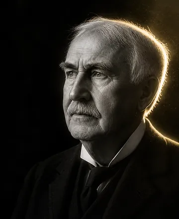

후보 30인
라인업
창업·도전 10인, 과학·발명 10인, 리더·역경 10인. 모두 공개 도메인 사료로 검증 가능한 인물만 골랐습니다. 발행된 기록은 바로 읽을 수 있습니다.
창업·도전
10인2번 문 닫은 사탕가게, 3번째에서 초콜릿
빚과 감옥, 그래도 고무를 놓지 않았다
폐병과 가난, 대학 대신 공장
공장이 사라진 뒤, 엔진부터 다시
소 판 70원을 품고 4번째 가출
3번의 실패 끝에 연 가게
의사가 만든 분유, 처음엔 아무도 사지 않았다
금을 캐러 간 청년이 판 것은 바지였다
과학·발명
10인라듐을 찾기까지, 창고 실험실의 4년
자전거 가게에서 날개를 만들다
제본공의 노트가 왕립연구소로
개 50마리에서 멈춘 백신, 사람에게 처음
20년 동안 출판하지 못한 이론
노예의 아들, 땅에서 쓰임을 찾다
노비에서 정3품까지, 측우기를 만든 손
청각장애인을 가르치던 교사가 전화를 만들다
리더·역경
10인아무도 그를 원하지 않던 10년
감옥 27년, 그가 배운 것
좌절한 행진이 만든 다음 행진
식민지 법정에서 쫓겨난 변호사
말을 잃은 아이가 세상과 말을 트기까지
백의종군, 다시 배를 탄 사람
반대를 뚫고 만든 28자의 문자
17세의 목소리
39세에 다리를 잃고 대통령이 되다
지금 읽을 수 있는 기록
5 Stories
1902, 이름과 도면을 챙겨 나왔다
회사를 2번 잃고도 그는 이름과 설계도를 챙겼다. 3번째 회사는 28,000달러에서 시작했다.

37세, 은행들이 문을 닫은 해
공황이 닥치자 동업자들은 값을 치를 수 없었다. 그는 그 몫을 모두 떠안고 공사를 계속했다.

1895, 실험실이 재가 된 새벽
새벽 2시 30분의 불이 반쪽 인생의 기록을 지웠다. 그는 같은 날 오후 설계도를 다시 그렸다.

1858, 표는 이겼고 의석은 잃었다
주 전체 득표는 앞섰지만 상원의원을 뽑는 것은 주의회였다. 54 대 46, 그는 낙선했다.

67세, 연구소가 타버린 밤
질산 필름 1통에서 시작된 불이 13동을 삼켰다. 다음 날 아침 그는 재건을 지시했다.